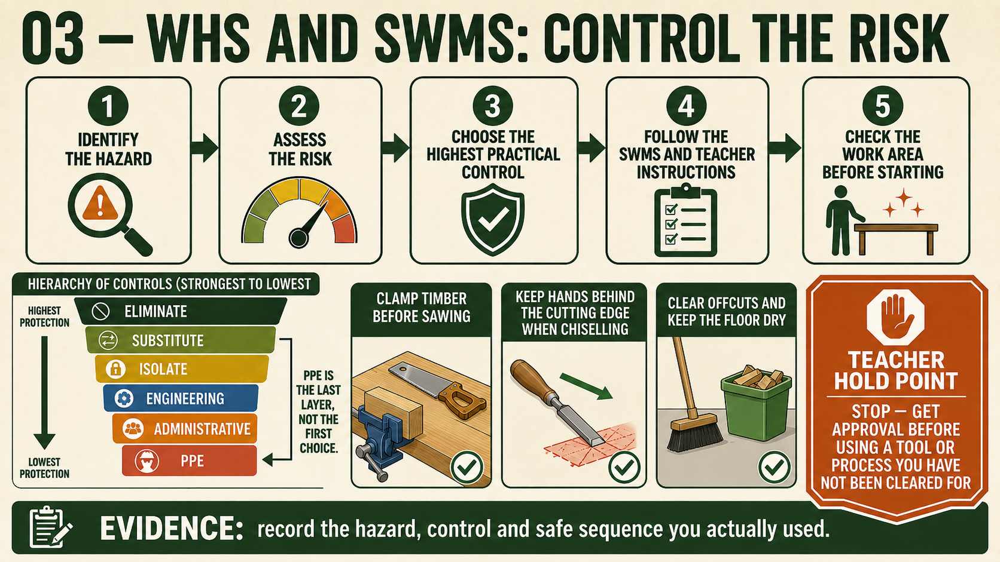

Module presentation
Learn with the slides
Use the presentation to preview Manual handling and workshop housekeeping, Sequencing the Carry-All work in a useful SWMS, Preparing Carry-All surfaces for finish before working through the theory, videos, checks and written evidence.
Weeks 15-16
This module
Organise people, materials and hazards through a useful work sequence, then prepare the Carry-All for finish.
Your work
Student details
Your entries save automatically in this browser. Use Print / Save PDF before leaving the page.
Theory 1
Manual handling and workshop housekeeping

Manual handling means moving, carrying, lifting, lowering or positioning materials and project components. Before moving anything for the Carry-All, assess the load and the path. Consider the object’s size, shape, weight, balance and whether it is awkward to grip. Then check where it must go, whether doors and walkways are clear, and whether a stable storage or work surface is ready. A load does not need to be extremely heavy to cause injury or damage if it is long, unbalanced or carried through a cluttered area.
Use the teacher-approved school procedure for every lift or carry. When directed, use a team lift rather than struggling alone. Team members need to understand the destination and move together so the load does not twist, swing or trap fingers. Ask for assistance whenever visibility is blocked, the material is awkward or the path cannot be managed safely. Trying to prove that you can carry something alone is not efficient or responsible workshop behaviour.
Long stock needs particular care because its far end can strike people, benches, projects or equipment. Check both ends before moving, maintain awareness of the surrounding area and follow teacher directions about carrying position and assistance. Do not drag stock across benches or leave it projecting into a walkway. Pine, plywood and prepared Carry-All components should be supported properly so edges, joint surfaces and marked reference lines are not dented, scratched or distorted.
- Assess the load, route and destination before moving anything.
- Clear tools, leads, clamps, off-cuts and bags from walkways.
- Use a team lift when directed and communicate before moving.
- Store stock and components on stable, approved supports.
- Report spills, unstable storage and trip hazards immediately.
Housekeeping is an ongoing safety control, not only an end-of-lesson clean-up. Dust, shavings, off-cuts, misplaced tools and trailing equipment can create slip or trip hazards and obstruct safe movement. Clutter can also damage accurately prepared Carry-All parts or cause components to be mixed up. Keep the work area appropriate for the current stage and use the school’s approved dust, waste and storage procedures.
Stable storage protects both people and the project. Components should not be balanced on narrow edges, stacked where they may slide or placed where adhesive, moisture or impact could damage them. At the end of each stage, return materials and tools to their approved locations and leave access routes clear. Folio evidence can show how manual-handling and housekeeping decisions protected the Carry-All while supporting a safe shared workshop.
Theory 2
Sequencing the Carry-All work in a useful SWMS
A useful Safe Work Method Statement, or SWMS, should follow the real sequence used to manufacture the Carry-All. It is more than a general list of workshop rules. It breaks the project into ordered stages, identifies the hazards connected with each stage and records the controls required before work begins. The sequence must come from the supplied working drawing, teacher directions and approved school processes rather than from guessing how the project should be built.
The Carry-All sequence may include interpreting the drawing, inspecting and marking approved materials, forming corner joints, rebates and housings where shown, preparing the handle opening, completing a dry assembly, applying adhesive and clamps, preparing surfaces, applying the approved finish and evaluating the result. Each stage depends on earlier work being accurate. For example, final assembly should not begin until the joints, base, dividers and handle panel have passed the required dry-fit checks.
- Name the construction stage and the work to be completed.
- Identify hazards linked specifically to that stage.
- Assess the risk and select suitable controls using the hierarchy of controls.
- Record required SOPs, supervision, PPE and teacher approvals.
- Identify the hold point that must be passed before the next stage begins.
A hold point is a planned stop where work is inspected before continuing. Useful Carry-All hold points may include approval of material layout before cutting, inspection of joint markings, checking the handle template, approval of a full dry assembly and confirmation that the surface is ready for the selected finish. Hold points prevent students from carrying an unnoticed fault into a later stage where correction may be harder, wasteful or unsafe.
The SWMS must also recognise dependencies. Adhesive and clamping depend on successful dry fitting; surface preparation depends on sound assembly; finishing depends on suitable surface quality and approved product information. These links help students prepare the correct tools, controls and evidence at the right time. They also reduce rushed decisions, unnecessary handling and work being completed in the wrong order.
Conditions can change during practical work. Material may reveal a defect, equipment may become unavailable, a component may not fit or the teacher may approve a revised local process. When this occurs, stop and review the SWMS rather than continuing with an outdated plan. Any change must be discussed and approved before work resumes. A strong folio shows that the SWMS guided real decisions throughout the project instead of being completed once and ignored.
Theory 3
Preparing Carry-All surfaces for finish

Surface preparation creates a clean, even foundation for the approved finish. It does not begin by sanding every surface heavily. First inspect the assembled Carry-All for machining marks, dents, torn grain, scratches, adhesive contamination and uneven joint areas. Decide which faults require attention and confirm the approved process with your teacher. Sanding cannot correct poor assembly, deep damage or an incorrectly fitted joint without possibly changing the intended shape.
Progressive sanding means refining the surface in controlled stages. Each stage should remove the scratches left by the previous approved abrasive before moving to a finer stage. Skipping stages or changing too quickly can leave deeper scratches hidden beneath finer marks. These faults may become more visible after finishing. The abrasive sequence must come from teacher direction and the selected finish system rather than from an invented set of grit numbers.
Where practical, work with the grain so sanding marks follow the timber fibres and are less noticeable. Grain may change direction near joints, edges or shaped areas, so inspect the surface instead of assuming every section runs the same way. Use controlled, even pressure and protect the Carry-All’s rebate-butt corners, housing shoulders, handle opening and divider edges. Excessive sanding can round crisp edges, change joint alignment or make matching surfaces uneven.
- Inspect surfaces under suitable light and from more than one angle.
- Remove scratches progressively using the teacher-approved abrasive sequence.
- Protect corners, joint details, edges and shaped handle transitions.
- Check carefully for adhesive residue around joints and internal corners.
- Control dust and clean the project using approved workshop procedures.
Adhesive contamination requires particular attention because dried residue may prevent the finish from absorbing or bonding evenly. This can produce pale, patchy or differently coloured areas. Do not spread contamination across the timber by sanding carelessly. Identify the affected area and follow the approved correction method. Dust must also be controlled because it can hide scratches during inspection, contaminate the finishing area and reduce the quality of the final surface.
A surface is ready for finish when it feels consistently prepared, shows no obvious unwanted scratches or adhesive marks, and retains the intended edges and shapes. Inspect both outside and internal areas, including around the handle, dividers, joints and base. Final approval must come from the teacher and the selected product information. Useful folio evidence should show the inspected surface before finishing and explain the checks used to judge readiness.
Guided practice
Weeks 15-16 knowledge checks
Choose an answer, check it and use the progressive hints and feedback to improve.
Apply your learning
Scaffolded written responses
Write first, use the feedback prompts, then compare your reasoning with the appropriate response example.
Finish the two-week block
Save your evidence
Your work saves in this browser, but browser storage is not the official submission. Save the completed page as a PDF before changing devices or clearing browser data.
No marks, answers or personal information are sent from this webpage.